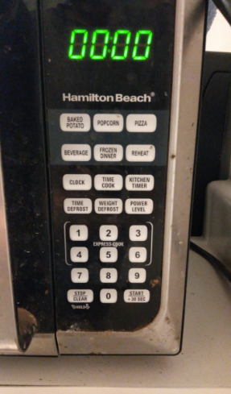

This has all the basic options available for the user to utilize microwave efficiently.
There is a turn table plate inside the microwave. The items to be prepared will be placed on this table. It also consists of sensors,lights, fuses etc.

It is recommended to eliminate multiple defrost options. It is also recommended to get all the timer otpions under a single button.One can vary the functionality by long pressing the same button. This is the recommendation that I would make to eliminate multiple buttons.
Power level button is rarely used. Because we set the required timer based on the type of food.It can be used only in situations where there are frequent fluctuations which is very rare/
Time cook is not essential as we already have an option to set the time in the form of the button +Add 30 sec.
The user can obtain the feedback from the interface once the operation selected is completed. In general, the feedback is obtained in the form of a sound confirming that the selected action is completed